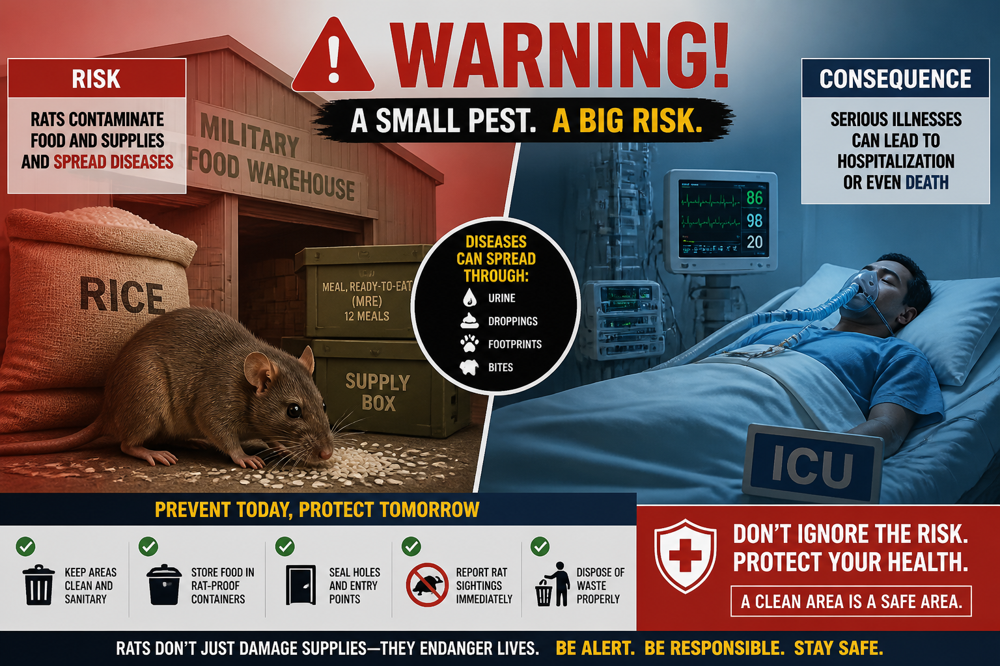
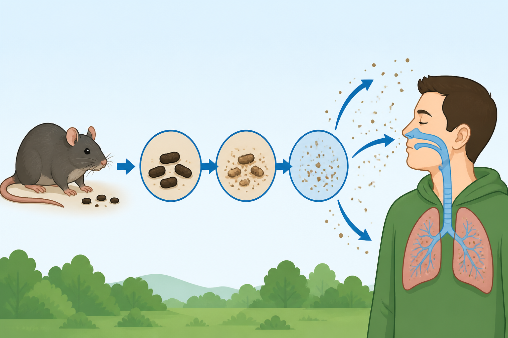
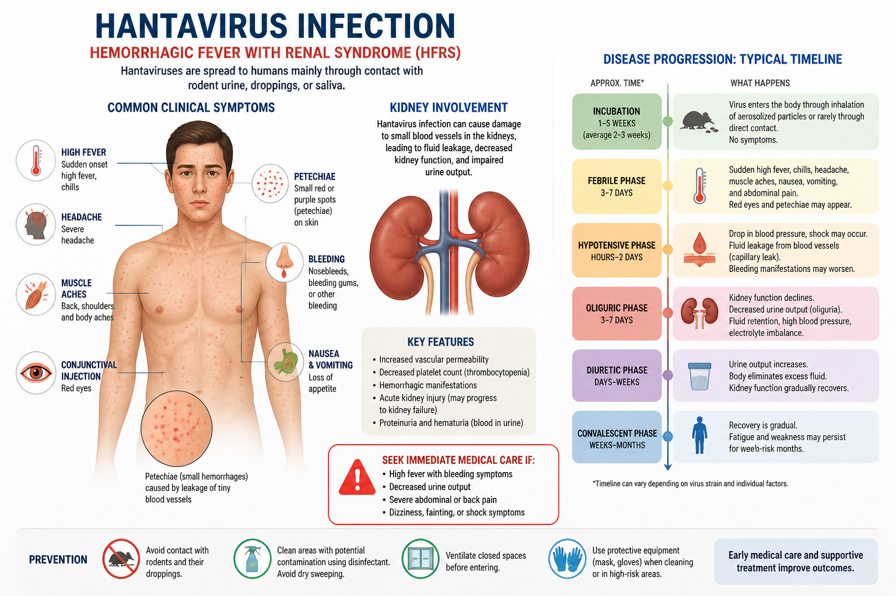
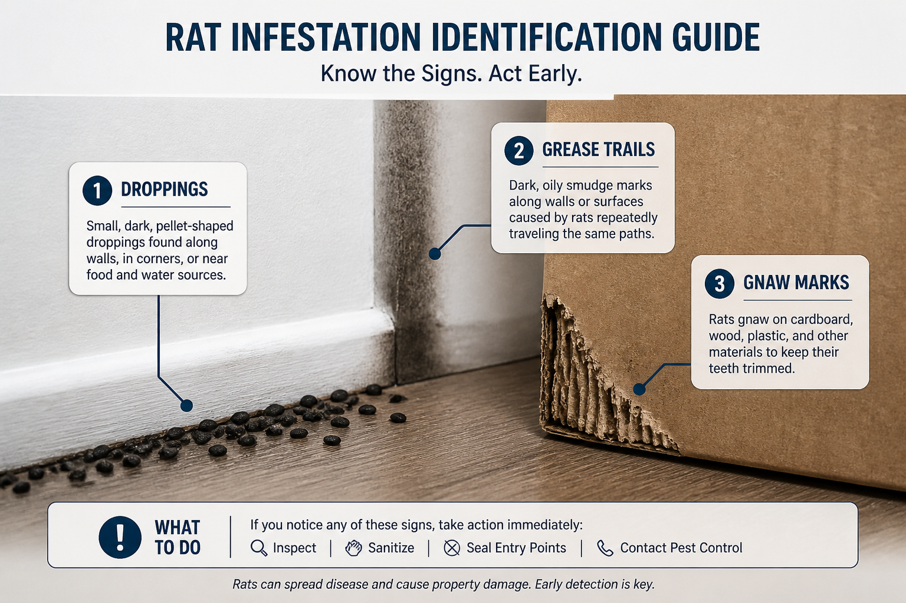
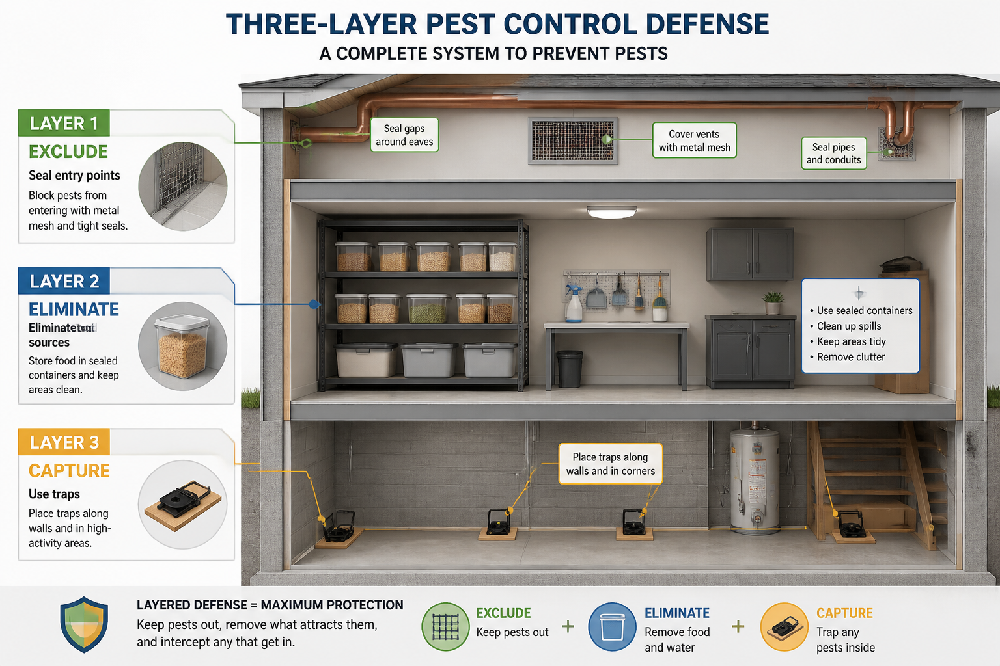
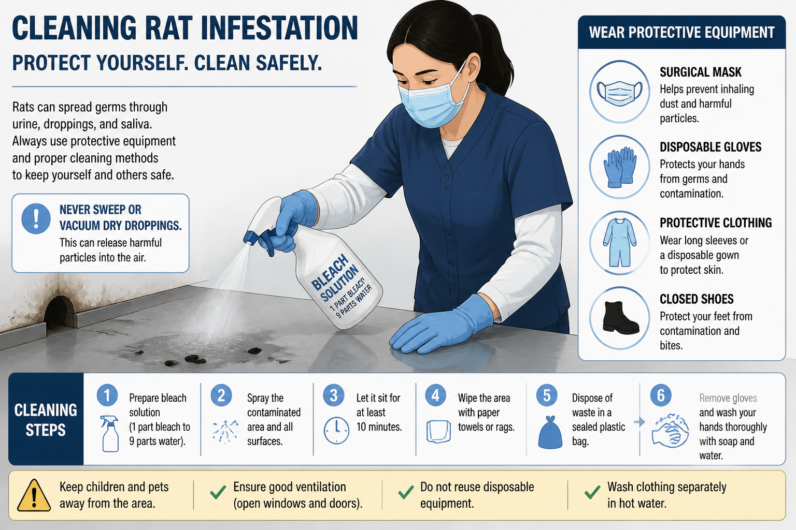

| 期別 | 時間 | 關鍵症狀 |
|---|---|---|
| 前驅期 | 發病 1–4 天 | 突發高燒、頭痛、肌肉痠痛、眼眶痛 |
| 出血／低血壓期 | 4–8 天 | 皮膚出血點、血壓下降、少尿 |
| 多尿／恢復期 | 1–2 週 | 腎功能逐漸恢復 |




| 情境 | 找誰處理 |
|---|---|
| 發現鼠跡、鼠患 | 環境衛生管理單位（滅鼠） |
| 有人發燒懷疑感染 | 醫務所 |
| 協助轉診就醫 | 醫務所安排交通、陪同說明接觸史 |
| 防護物資（口罩、手套、酒精） | 可向 醫務所申請 |